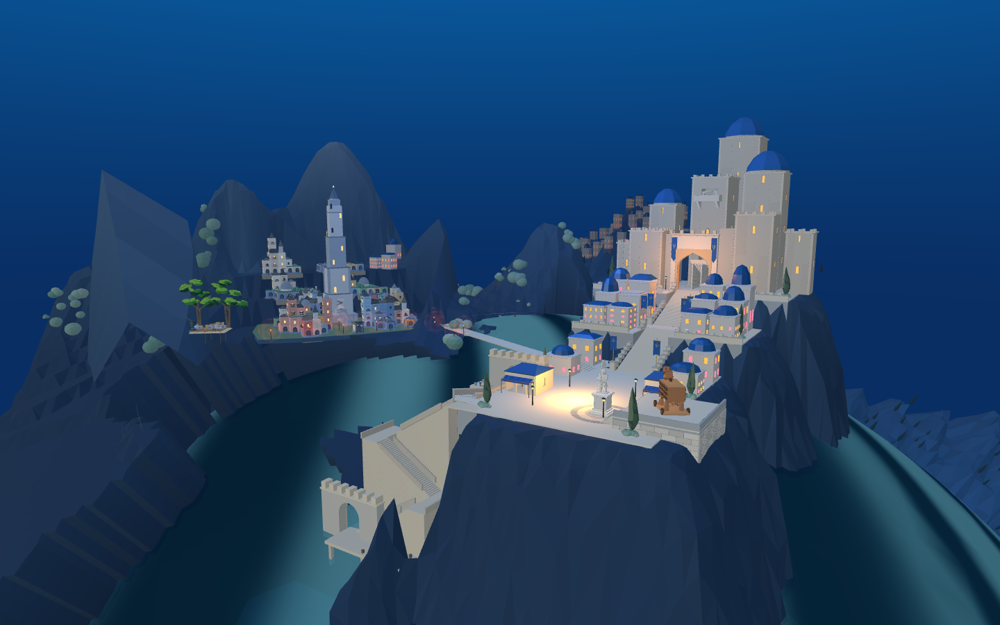
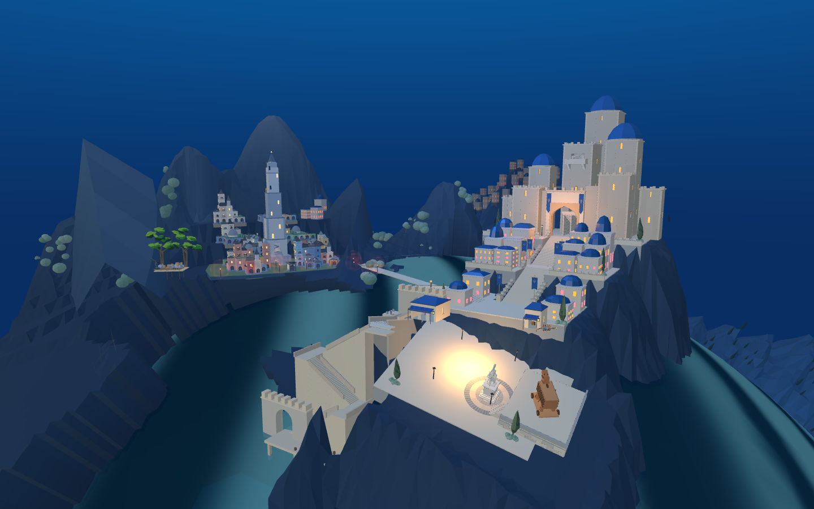

本页是未合入的结构候选，不是已完成场景。8931 原游戏继续使用已验证的通路。
原广场四角与实际球形海面净高为 7.76、17.25、16.91、27.05 米。整块广场使用远处山城的水平面，因球面下落，右前角出现异常高台。只向后移动20米，最高角仍达18.27米，不能解决倾斜关系。


原雕像、铺砖、木马平台与前场植物共同变换后，四角离水约6.92～7.85米。但是只改广场使它与主堡平台发生折角，旧港和前港台阶断接；本候选不能合入，也不能用“净高通过”冒充整体完成。
下一轮必须把新城建筑及前场作为统一局部坐标框架处理，同时重建与旧城桥梁、原港口、前港及山体的接缝；上层旋梯等内部几何随统一框架保持相对关系。应先在副本完整处理这些接口，再进行真人比例的角色通行验证。